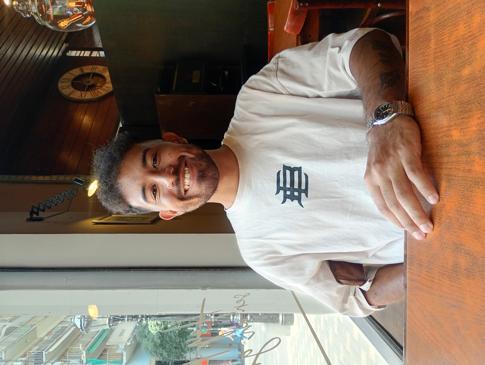

En este espacio vas a encontrar mis proyectos más destacados. Mi nombre es Franco Zuviría, perfil junior en desarrollo web, con conocimientos en HTML, CSS e inteligencia artificial. Actualmente me desempeño como community manager y asesor de marketing digital. Me apasiona la tecnología y el desarrollo web, y estoy en constante aprendizaje para mejorar mis habilidades y conocimientos en este campo.
Mi objetivo es colaborar con empresas y negocios a optimizar sus proyectos digitales o crear los mismos,aportando mis conocimientos y asesorando acerca de lo más adecuado para cada caso. Garantizando también acompañamiento y soporte en el tiempo, para sostener los proyectos en caso de requerirlo.
Como primer instancia, tendremos una reunión para conocer tu proyecto, sus necesidades y los objetivos a alcanzar. Una vez comprendido el proyecto, te presentaré un plan de acción detallado, incluyendo los pasos a seguir, los plazos acorde al servicio requerido, ya sea desarrolio web, marketing digital o contenido para redes sociales.